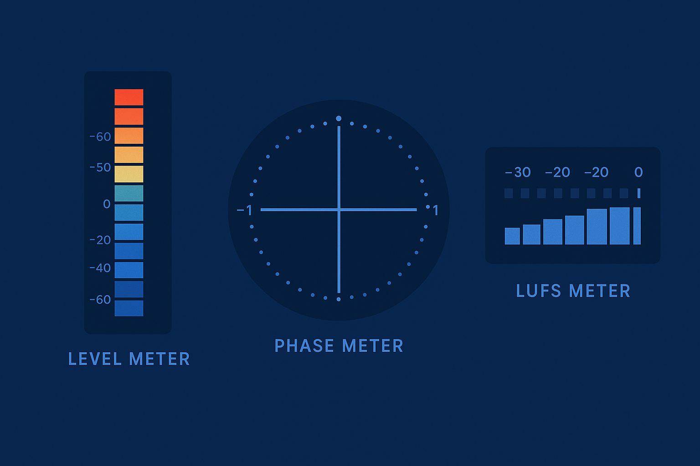

How to Read Your Meters and Fix Mix Problems
Mixing is both an art and a science. While your ears are your most important tools, your meters provide crucial visual feedback that can help you identify and fix problems in your mix. Learn how to interpret different types of meters and use them to diagnose and solve common mix problems.
Read More →